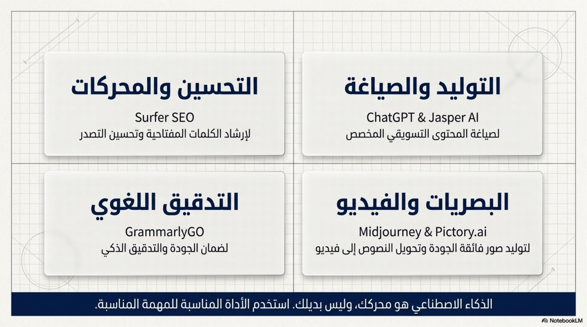
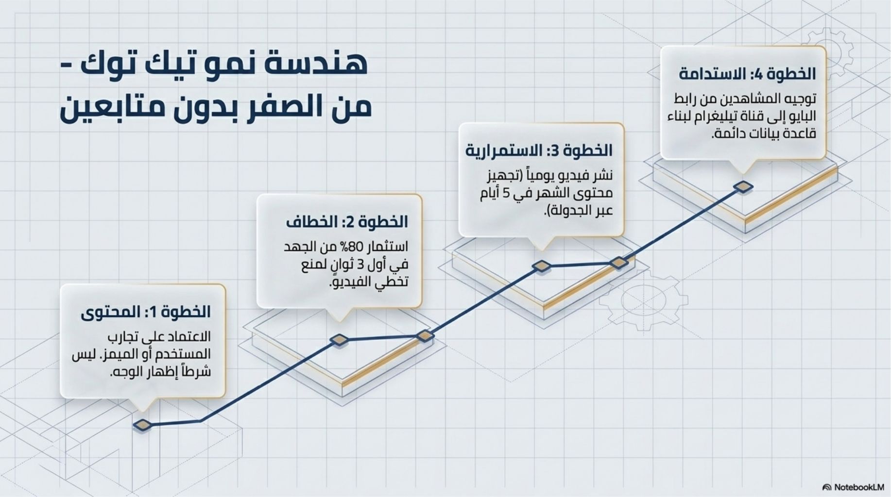

هل تقبل جوجل المحتوى المكتوب بالذكاء الاصطناعي؟
تحليل عربي عملي يشرح موقف جوجل الحقيقي من محتوى AI.
منصة عربية منظمة تجمع أفضل أدوات AI، المقالات، خطط التعلم، والمصادر المفتوحة في مكان واحد.
ابدأ من القسم الأقرب لك: أدوات جاهزة، مقالات تعليمية، أو خطة تعلم عملية.


قوائم ملوّنة ومنظمة تربطك مباشرة بأهم أجزاء الموقع.
قائمة منظمة لأدوات AI حسب الاستخدام.
افتح القسم →مقالات تحليلية وتعليمية ومراجعات أدوات.
افتح المكتبة →مسارات تعلم ومقالات للمبتدئين خطوة بخطوة.
ابدأ التعلم →مصادر ونماذج يمكن تجربتها وبناؤها محليًا.
افتح المصادر →بعض المقالات المهمة مع الصور والروابط المباشرة.

تحليل عربي عملي يشرح موقف جوجل الحقيقي من محتوى AI.

فرصة تاريخية أم تهديد صامت للمواقع العربية.

مقارنة عملية بين ChatGPT وJasper وCopy.ai وWritesonic.

قوائم مرتبة وواضحة لكل المقالات المنشورة في Smartafiliate.